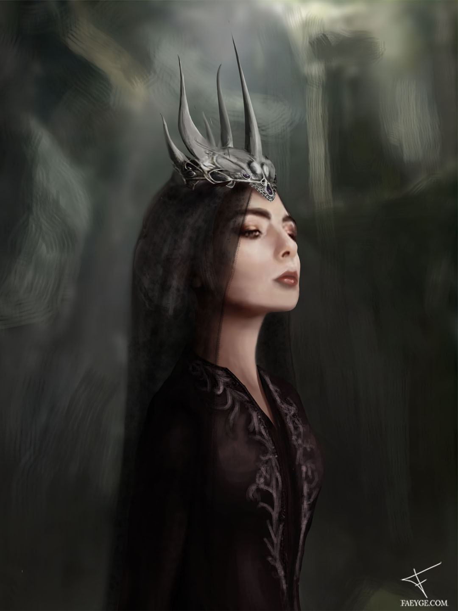

Queen of Rats
She’s the cold hearted underground leader of the city. Everyone here knows of her and even the guards are starting to fear her followers; the Rats, who all have their criminal past in common. They round up all the people who’ve turned their back on the Duke. Nobody knows what her true plan is, but rumor has it that when any of her followers does her wrong, she turns them into sewer rats and are tasked to spy on the entire city. That’s how she knows anything going on and anyone in the duchy, despite never leaving her temple underneath the city.’
- Lyanna on the Queen of Rats.
I’m really excited about the progress I’ve been making on this novel/concept art project. And this time it’s up to the villain to be showcased.